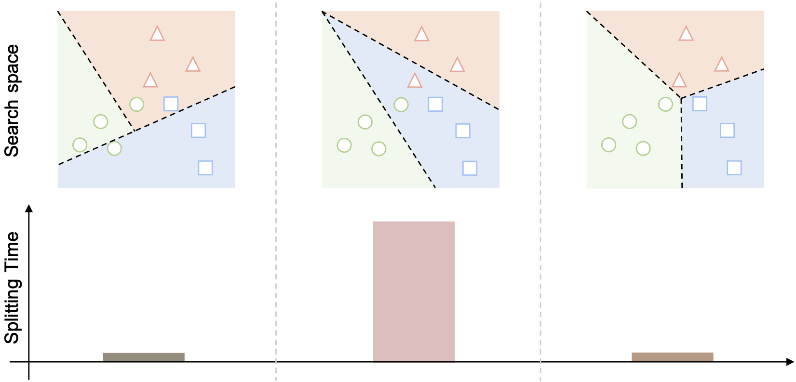
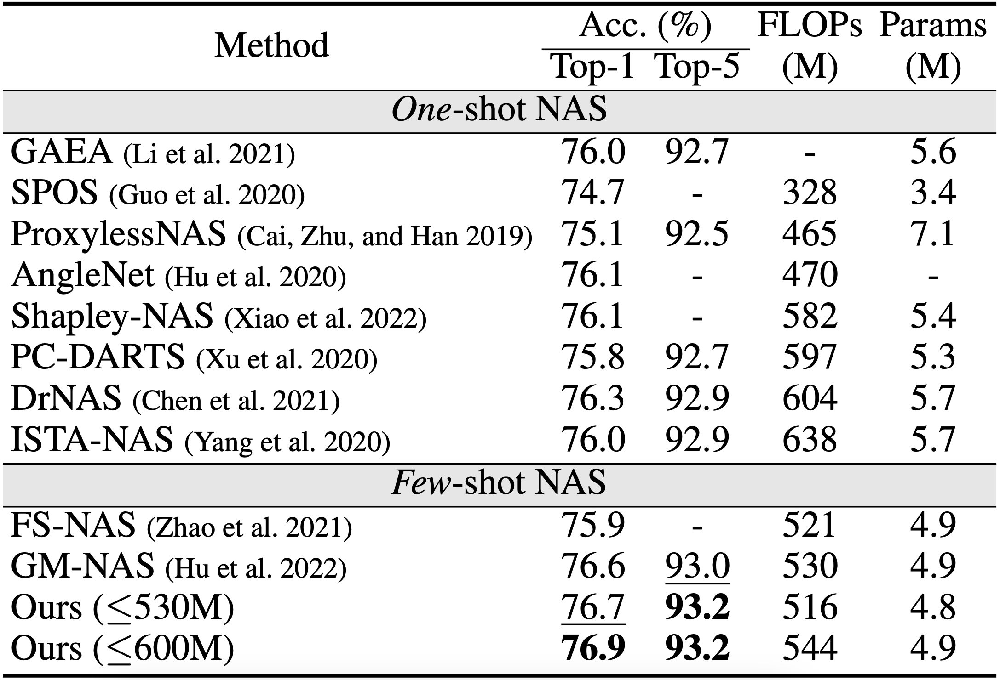
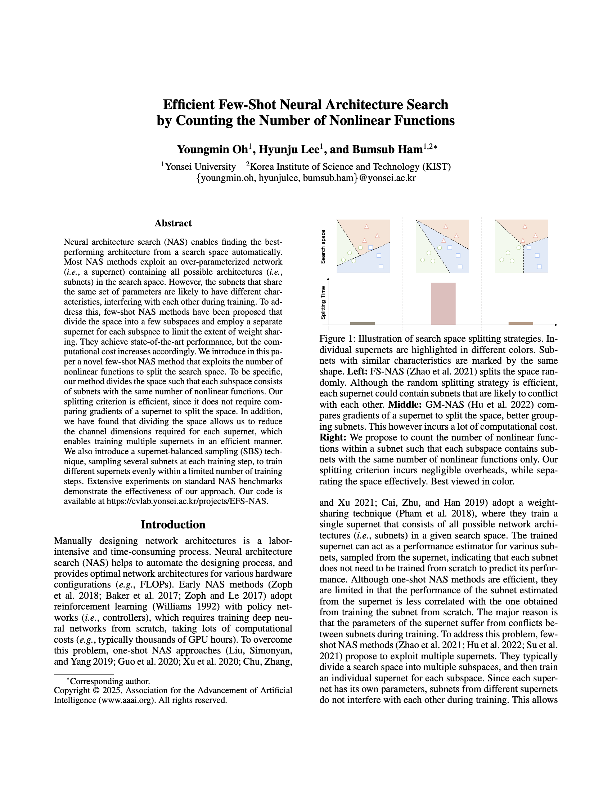

Illustration of search space splitting strategies. Individual supernets are highlighted in different colors. Subnets with similar characteristics are marked by the same shape. Left: FS-NAS splits the space randomly. Although the random splitting strategy is efficient, each supernet could contain subnets that are likely to conflict with each other. Middle: GM-NAS compares gradients of a supernet to split the space, better grouping subnets. This however incurs a lot of computational cost. Right: We propose to count the number of nonlinear functions within a subnet such that each subspace contains subnets with the same number of nonlinear functions only. Our splitting criterion incurs negligible overheads, while separating the space effectively. Best viewed in color.
Abstract
Neural architecture search (NAS) enables finding the best-performing architecture from a search space automatically. Most NAS methods exploit an over-parameterized network (i.e., a supernet) containing all possible architectures (i.e., subnets) in the search space. However, the subnets that share the same set of parameters are likely to have different characteristics, interfering with each other during training. To address this, few-shot NAS methods have been proposed that divide the space into a few subspaces and employ a separate supernet for each subspace to limit the extent of weight sharing. They achieve state-of-the-art performance, but the computational cost increases accordingly. We introduce in this paper a novel few-shot NAS method that exploits the number of nonlinear functions to split the search space. To be specific, our method divides the space such that each subspace consists of subnets with the same number of nonlinear functions. Our splitting criterion is efficient, since it does not require comparing gradients of a supernet to split the space. In addition, we have found that dividing the space allows us to reduce the channel dimensions required for each supernet, which enables training multiple supernets in an efficient manner. We also introduce a supernet-balanced sampling (SBS) technique, sampling several subnets at each training step, to train different supernets evenly within a limited number of training steps. Extensive experiments on standard NAS benchmarks demonstrate the effectiveness of our approach.
Results

Quantitative results of searched architectures on ImageNet. We use two constraints in terms of FLOPs for the evolutionary search algorithm. FS-NAS and GM-NAS exploit five and six supernets with full channel dimensions, respectively, while our method adopts six supernets with half channel dimensions (i.e., G=2). Params: the number of network parameters for the chosen architecture.
This table shows top-1 and top-5 accuracies of our architectures chosen from the MobileNet search space. To this end, we perform the evolutionary search using FLOPs as a hardware constraint. We can see from this table that our method with a constraint of 530M FLOPs provides better results than FS-NAS and GM-NAS in terms of test accuracy, FLOPs, and the number of parameters. This is remarkable in that our method exploits six supernets with reduced channel dimensions to alleviate the computational cost, while FS-NAS and GM-NAS adopt five and six supernets with full channel dimensions, respectively. We can also see that our architecture searched with a constraint of 600M FLOPs achieves the highest test accuracy. This suggests the importance of effectively dividing the search space to improve the search performance.
Paper
|
|

|
|
Y. Oh, H. Lee, B. Ham
Efficient Few-Shot Neural Architecture Search by Counting the Number of Nonlinear Functions
In AAAI Conference on Artificial Intelligence, 2025
[arXiv][Github]
|
Acknowledgements
This work was supported in part by the NRF and IITP grants funded by the Korea government (MSIT) (No.2023R1A2C2004306, No.RS-2022-00143524, Development of Fundamental Technology and Integrated Solution for Next-Generation Automatic Artificial Intelligence System), the KIST Institutional Program (Project No.2E31051-21-203), and the Yonsei Signature Research Cluster Program of 2024 (2024-22-0161).